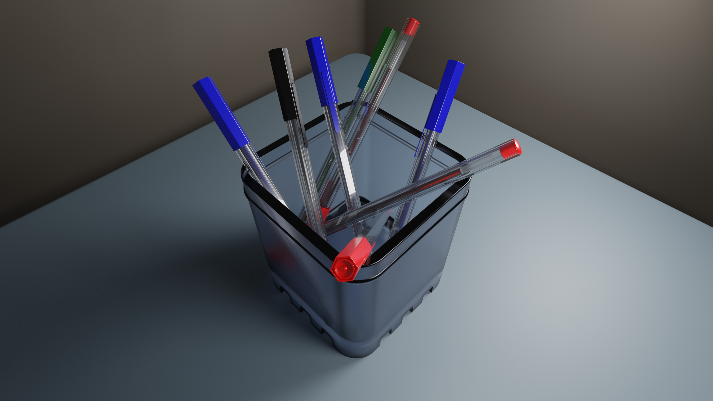
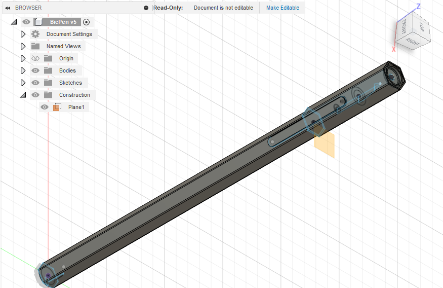
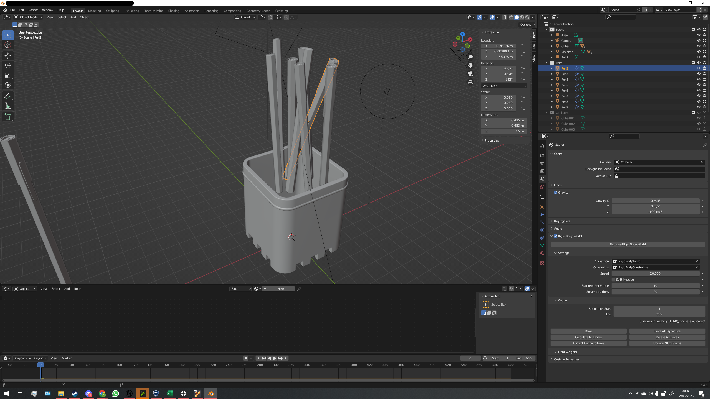
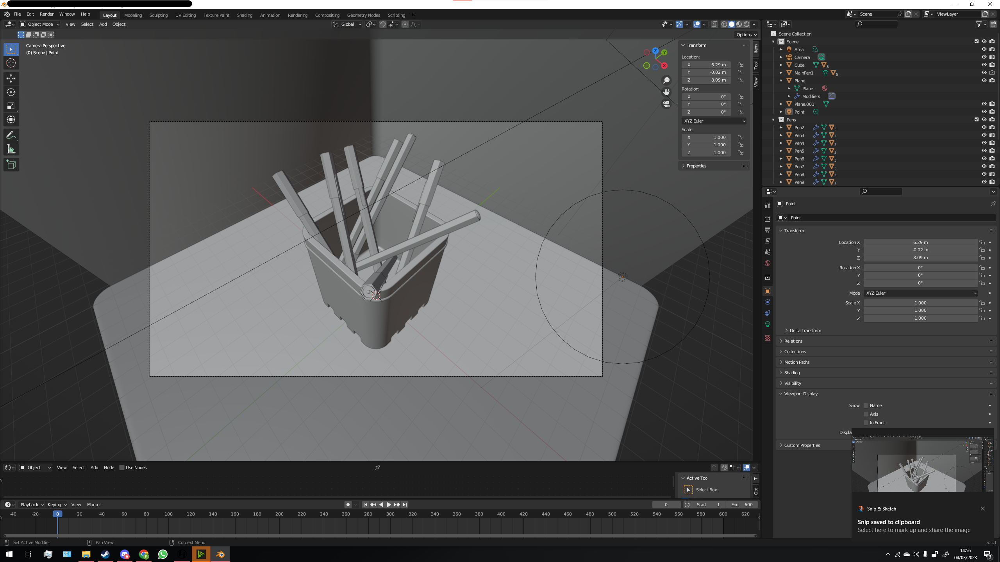
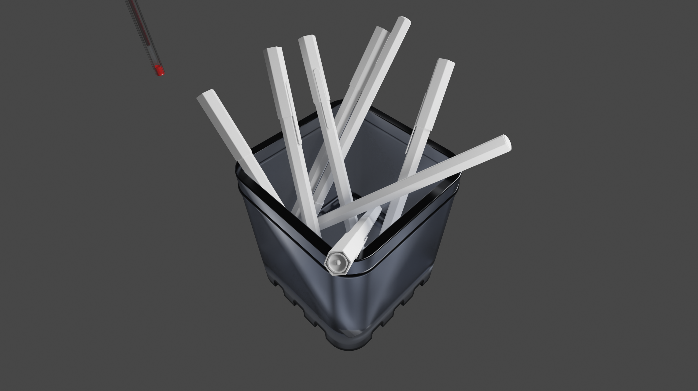

Project: Creating and Rendering a Pot of Pens

I first went about making the pen model by measuring a normal ballpoint pen's dimensions using vernier calipers.
Then I created the inital model in Autodesk Fusion360 where multiple bodies were created to form the pen.


Using the exported model, I was able to setup a scene with a bunch of pens suspended above a small cup.
The idea being that a physics simulation could be ran to get a more natural positioning for each of
the pens in the pot.
The physics is never accurate but once the simulation is ran, I can touch up the geometry
of all of the pens to ensure that they aren't clipping into each other. After this, their translated
positions can be made permanent.
With all of the pen models in position I was now confident in building some sort of scene
that could be used within the render.
The base/floor underneath the pen bot was beveled initially with Blender's built-in function fo the same name.
This was applied to the vertical edges of the base. Using the HardOps addon, you can perform a global bevel
to the whole base. Having a high enough polygon count in both of the boolean operations allows for a "smooth finish".
An "L" shaped box was positioned as the background and smoothed out with a singular boolean operation.
Having a gap between the base and the background allowed for depth. Similar to
a corner of a desk in the corner of a room.


Determining the lighting against the pens was important so I tested out different planar and spot lights
to achieve a good amount of brightness and reflection before applying any further materials.
Now that the positioning of the pens and the main lighting has been established, all that is left is the
scene lighting and the materials.
Using the nodular effects system I can produce the shiny plastics, fogged glass and soft matte colours
needed to perfect the scene. No texture mapping was needed.
The render was then optimised for a better quality than what the default render settings provided.